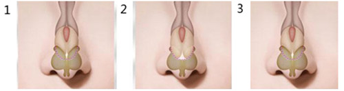
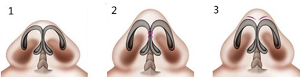

娇好的面容离不开坚挺俏丽的鼻子，而鼻尖的好看与否却是鼻部至关重要的因素。完美的鼻尖成就美丽的脸庞。芜湖瑞丽，鼻尖成型术，让你拥有挺立的俏鼻，精致的容颜。

鹰钩鼻者、鼻尖圆钝低平者、植骨鼻尖过高者、鼻尖隐裂者
低鼻尖矫正术：包括3个方法，软骨移植法，双侧鼻翼软骨内脚靠拢法和鼻翼基底楔形切除法。

超高鼻尖矫正术：适宜突度的鼻尖，是指由鼻背向鼻尖过渡，是平直抬高的过程。

钝平鼻尖矫正术：手术采取鼻孔内鼻翼缘切口，完全显露双侧鼻翼软骨的穹窿部。然后在其表面做切口3-6条，但不可切透。将鼻翼软骨内侧脚间的软组织切除。褥式缝合拉拢两内侧脚。

肥厚鼻尖矫正术：人们俗称这类鼻子为“蒜头鼻子”.原因是皮肤较厚，皮下组织量多，软骨支架肥厚且有向外膨隆之势。治疗这类鼻尖的手术最具挑战性，手术采取缘切口或软骨间切口。



1、尊贵定制：术前个性化的美丽方案，精心服务，每位求美者都可尊享定制美丽
2、精雕细琢：温和细腻的可视化操作，无痛处，流血少，杜绝各种并发症，不留痕迹
3、美学设计：依据国际美学黄金标准，进行全面部整体设计，符合个人独特气质
4、安全自然:国际顶尖材料，独具匠心设计，专家熟练技艺，保障了手术安全和自然效果丽